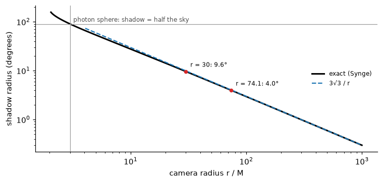
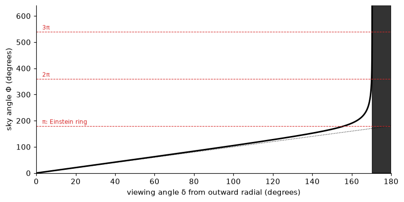
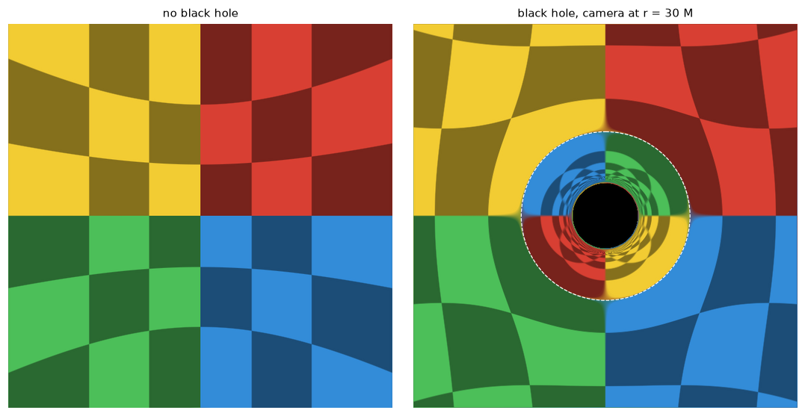
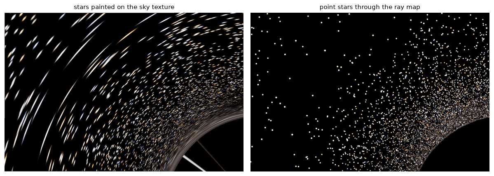

Cameras, celestial spheres, Einstein rings and multiple images: turning the bending of light into a picture (part 2 of 4)
How to render what a camera near a non-spinning black hole sees: tracing rays backward, the local frame of a static observer, the size of the shadow, a lookup-table renderer, Einstein rings, multiple images and their magnifications, conservation of surface brightness, and the aberration caused by the camera’s own motion.
Part 1 found how far a non-spinning hole bends a ray from infinity. A picture needs more than that. It needs a camera at a definite place, which in Interstellar is a few dozen \(M\) from the hole and sometimes moving at half the speed of light, and a sky for the rays to land on. This post builds both, for the non-spinning (Schwarzschild) case, where the symmetry makes everything checkable.
Show code
import sys, math, time, warningsfrom pathlib import Pathwarnings.filterwarnings("ignore")ROOT = Path.cwd().resolve().parents[1] /"gargantua"sys.path.insert(0, str(ROOT))import numpy as npimport matplotlib.pyplot as pltfrom blackhole import schwarzschild as S, kerr, render as R, sky as SKfrom blackhole.colour import tonemap, bloomplt.rcParams.update({"figure.dpi": 110, "axes.spines.top": False, "axes.spines.right": False})def show(ax, img, title=None): ax.imshow(np.clip(img, 0, 1), interpolation="lanczos") ax.set_axis_off()if title: ax.set_title(title, fontsize=10)checker = SK.Sky(SK.checkerboard(1024, n_lat=12, n_lon=24))milky = SK.Sky(SK.milky_way(2048))stars = SK.star_catalogue()
Trace the light backwards
A star sends light in every direction, and almost none of it reaches the camera. Tracing rays forward from the stars would waste nearly all the work. Geodesics are reversible, so instead we start at the camera, send one ray out through each pixel, backwards in time, and ask where it came from. There are three possible answers:
it escapes to large radius, so the pixel shows the point of the celestial sphere (the sky at infinity) in the direction the ray leaves;
it reaches the horizon, so the pixel is black, part of the shadow;
it crosses some light source on the way, such as an accretion disk (part 4).
The renderer is then a map from the camera’s sky to the celestial sphere. This is how the DNGR code written for Interstellar works, and how almost all black-hole imaging codes work.
What a static observer sees
A pixel’s direction is measured in the camera’s own frame, not in the coordinates \((t, r, \theta, \phi)\). Start with a static camera, hovering at fixed \(r\) by firing rockets. Its local, orthonormal frame has basis vectors along \(\hat r\), \(\hat\theta\) and \(\hat\phi\), scaled so that lengths and times are the ones it actually measures:
This one line connects a pixel to the theory in part 1. Note the factor \(1/\sqrt{1 - 2/r}\): near the hole, a given viewing angle corresponds to a larger impact parameter than flat space would suggest.
The size of the shadow
A ray looking inwards (\(\delta > \pi/2\)) escapes only if \(b > 3\sqrt3\). The edge of the shadow is therefore where \(b = 3\sqrt 3\), and its angular radius \(\psi\), measured from the direction of the hole, satisfies
(Synge 1966). For \(r \gg 1\) this is just \(3\sqrt3/r\), the angular size of a disk of radius \(b_c\). Close in, it grows fast: at the photon sphere, \(r = 3\), the shadow fills exactly half the sky, and inside it the shadow covers more than half.
Show code
rr = np.geomspace(2.05, 1000, 400)psi = np.degrees([S.shadow_angle(x) for x in rr])fig, ax = plt.subplots(figsize=(7, 3.4))ax.loglog(rr, psi, "k", lw=2, label="exact (Synge)")ax.loglog(rr[rr >4], np.degrees(S.B_CRIT / rr[rr >4]), "C0--", label="3√3 / r")ax.axvline(3, color="0.6", lw=0.8)ax.axhline(90, color="0.6", lw=0.8)ax.text(3.2, 100, "photon sphere: shadow = half the sky", fontsize=8, color="0.3")for x in [30, 74.1]: ax.plot(x, math.degrees(S.shadow_angle(x)), "o", color="C3", ms=4) ax.annotate(f"r = {x:g}: {math.degrees(S.shadow_angle(x)):.1f}°", (x, math.degrees(S.shadow_angle(x))), textcoords="offset points", xytext=(6, 6), fontsize=8)ax.set_xlabel("camera radius r / M")ax.set_ylabel("shadow radius (degrees)")ax.legend(frameon=False, fontsize=8)plt.tight_layout()plt.show()

Figure 1: Angular radius of the shadow seen by a static observer, against distance from the hole. The dashed line is the far-field approximation 3√3/r. At the photon sphere (r = 3) the shadow is a hemisphere.
One function renders the whole image
Spherical symmetry does the rest. Every ray stays in the plane containing the hole, the camera and the ray’s initial direction. Within that plane, the only thing that matters is \(\delta\). So the whole image is determined by one function of one variable: the total angle \(\Phi(\delta)\) swept round the hole by the backward ray before it reaches infinity.
From part 1, with \(u_c = 1/r\) for the camera:
a ray heading outwards (\(\delta \le \pi/2\)) sweeps \(\displaystyle\Phi = \int_0^{u_c}\frac{du}{\sqrt{P(u)}}\);
a ray heading inwards with \(b > 3\sqrt3\) first falls to its turning point and then climbs out, so \(\displaystyle\Phi = \int_{u_c}^{u_0}\frac{du}{\sqrt{P(u)}} + \int_0^{u_0}\frac{du}{\sqrt{P(u)}}\), both elliptic integrals.
The pixel then shows the point of the sky at angle \(\Phi\) from the camera’s outward radial direction, rotated towards the ray’s own direction. With no hole at all, \(\Phi = \delta\) and the camera sees the sky undistorted.
Show code
r_cam =30.0tab = S.sky_angle_table(r_cam)d, P = tabpsi_shadow = S.shadow_angle(r_cam)fig, ax = plt.subplots(figsize=(7.5, 3.8))ax.plot(np.degrees(d), np.degrees(P), "k", lw=2)ax.plot([0, 180], [0, 180], "k:", lw=0.8)ax.axvspan(180- math.degrees(psi_shadow), 180, color="k", alpha=0.8)for n, lab in [(1, "π: Einstein ring"), (2, "2π"), (3, "3π")]: ax.axhline(180* n, color="C3", lw=0.7, ls="--") ax.text(3, 180* n +8, lab, color="C3", fontsize=8)ax.set_xlim(0, 180)ax.set_ylim(0, 640)ax.set_xlabel("viewing angle δ from outward radial (degrees)")ax.set_ylabel("sky angle Φ (degrees)")plt.tight_layout()plt.show()

Figure 2: The lensing map of a static camera at r = 30 M: the sky angle Φ against the viewing angle δ (both from the outward radial direction). The dotted line is flat space. Where the curve crosses Φ = π (the point directly behind the hole) is the Einstein ring. It crosses 2π and 3π ever closer to the shadow’s edge (shaded), where Φ diverges.
Tabulating \(\Phi(\delta)\) once, on a grid packed geometrically towards the shadow’s edge where it diverges, takes a fraction of a second. After that, every pixel is an interpolation. As an independent check, the same image can be traced the slow way, integrating every ray through the full spinning-hole equations of part 3 with the spin set to zero:
lookup table: 7 ms for 120000 pixels
full geodesic integration: 0.98 s
pixels classified differently (shadow or sky): 0
largest difference in sky direction: 2.2e-05 rad
The two methods agree on which pixels are shadow, and the sky directions differ by at most 2e-05 radians, about 5 arcseconds. About half of that residual comes from stopping the integrated rays at \(r = 1000\,M\) rather than infinity. The rest comes from interpolating the 4,000-point table close to the shadow’s edge, where \(\Phi\) changes fastest. A finer table and a more distant stopping radius bring it below \(10^{-6}\).
The lensed sky
The test pattern used in the DNGR paper is a celestial sphere painted with a checkerboard, coloured by quadrant, so that every patch of the image can be traced back to where it came from. Here a static camera at \(r = 30\,M\) looks at the hole with a 90° field of view:
Show code
cam = kerr.Camera(r_cam, math.radians(90), 0.0, fov=90)N = cam.directions(640, 640)# flat space: the pixel sees the sky straight ahead; at theta = 90 the camera's# (forward, right, up) are (-x, +y, +z) in the hole's framev_flat = np.stack([-N[..., 0], N[..., 1], N[..., 2]], -1)v, cap = S.lens_directions(N, r_cam, cam.theta, tab)flat = checker.sample(v_flat)fp = SK.footprint(v, ~cap)lensed = np.where(cap[..., None], 0.0, checker.sample(v, fp))psiE = S.einstein_ring(r_cam, tab)fig, ax = plt.subplots(1, 2, figsize=(10, 5))show(ax[0], flat, "no black hole")show(ax[1], lensed, f"black hole, camera at r = {r_cam:g} M")t = math.tan(math.radians(45))R_E = math.tan(psiE) / t *320ax[1].add_patch(plt.Circle((320, 320), R_E, fill=False, ec="w", lw=0.8, ls="--"))plt.tight_layout()plt.show()

Figure 3: A checkerboard celestial sphere seen by a static camera 30 M from the hole: left, with the hole removed; right, lensed. The far side of the sky is magnified into a ring (the Einstein ring is where the quadrant directly behind the hole is stretched round the whole circle), and inside it a second, inverted image of the entire sky is squeezed against the shadow.
The dashed circle is the Einstein ring, where \(\Phi(\delta) = \pi\). It is the image of the single point of the sky directly behind the hole, smeared round a circle by symmetry. For a camera far from the hole, the ring’s angular radius approaches the weak-field value \(\sqrt{4M/r}\):
Show code
print(f"{'r/M':>6}{'ring (exact)':>13}{'sqrt(4M/r)':>11}{'shadow':>8}")for x in [10, 30, 74.1, 100, 1000]: tb = S.sky_angle_table(x)print(f"{x:6g}{math.degrees(S.einstein_ring(x, tb)):12.2f}° {math.degrees(math.sqrt(4/x)):10.2f}° "f"{math.degrees(S.shadow_angle(x)):7.2f}°")
Table 1: Angular radius of the Einstein ring and of the shadow, for a static camera at radius r.
Inside the ring is a second image of the whole sky, inverted and compressed: the light that went round the “wrong” side of the hole. Inside that, too thin to see here, is a third, and so on, the sequence of part 1 shrinking by \(e^{-\pi}\) per half-turn.
Point stars, images and magnification
A real sky is mostly point stars. Each star has a primary image outside the Einstein ring and a secondary image inside it, on the opposite side of the hole, plus fainter higher-order images hugging the shadow.
Because \(\Phi\) is monotonic, all of a star’s images can be found directly. If the star lies at angle \(\Psi\) from the camera’s outward direction, its images sit at
How bright is each image? Lensing does not create or destroy light, and it conserves surface brightness (specific intensity). This is Liouville’s theorem: the phase-space density of photons is constant along a ray. So an image is brighter in proportion to how much solid angle it occupies on the camera’s sky compared with the star’s true solid angle. That ratio is the magnification:
(the azimuthal factor \(d\varphi\) is the same on both sides and cancels). Near the Einstein ring \(\sin\Psi \to 0\), so \(\mu\) diverges. A star passing behind the hole flares enormously as its two images stretch round the ring.
The renderer cannot use that formula once the hole spins, because there is no single function \(\Phi(\delta)\). The general method works for any ray map. Cut the camera’s sky into small triangles, two per cell of the ray grid. Each one maps to a spherical triangle on the celestial sphere. A star that falls inside a sky triangle has an image inside the matching camera triangle, at the same barycentric position. Its magnification is the ratio of the two triangles’ solid angles, with a negative sign if the triangle’s orientation is reversed, meaning the image is mirror-flipped. Here the two methods are compared, for 60,000 stars and a camera at \(30\,M\):
Show code
cam = kerr.Camera(r_cam, math.radians(90), 0.0, fov=60)NX = NY =900N = cam.directions(NX, NY)v, cap = S.lens_directions(N, r_cam, cam.theta, tab)idx, x, y, mu, om = SK.lensed_stars(kerr.Camera.right_handed(N), v, ~cap, stars)# exact images from the inverse of Phieidx, eN, emu, order = S.point_images(stars["v"], r_cam, cam.theta, tab, n_max=1)t = math.tan(math.radians(30))ex = (eN[:, 1] / eN[:, 0] / t +1) /2* NX -0.5ey = (-eN[:, 2] / eN[:, 0] / t +1) /2* NY -0.5inview = (eN[:, 0] >0) & (ex >2) & (ex < NX -3) & (ey >2) & (ey < NY -3)# match triangle-method images to exact ones (same star, same position)from scipy.spatial import cKDTreekey = cKDTree(np.c_[ex[inview], ey[inview], 1e4* eidx[inview]])dist, j = key.query(np.c_[x, y, 1e4* idx])good = dist <0.05ratio = mu[good] / emu[inview][j[good]]print(f"images found by the triangle method: {len(idx)}")print(f"primary + secondary images (exact, in view): {inview.sum()}")print(f"matched to within 0.05 px: {good.sum()}")for o, name in [(1, "primary"), (2, "secondary")]: m = order[inview][j[good]] == o q = np.percentile(ratio[m], [1, 50, 99])print(f"{name:9s}: magnification ratio, 1/50/99th percentile {q[0]:.4f}{q[1]:.4f}{q[2]:.4f};"f" parity {'+'if np.median(mu[good][m]) >0else'-'}")med_ratio = np.median(ratio)
images found by the triangle method: 34169
primary + secondary images (exact, in view): 31018
matched to within 0.05 px: 30012
primary : magnification ratio, 1/50/99th percentile 0.9853 1.0001 1.0175; parity +
secondary: magnification ratio, 1/50/99th percentile 0.8547 0.9996 1.1440; parity -
96.8% of the exact primary and secondary images in view are matched by a triangle-method image within 0.05 pixels, and the two magnifications agree with a median ratio of 0.9997. Almost all of the unmatched few are secondary images within a degree of the shadow’s edge, where the map is so compressed that interpolating inside one cell misplaces an image by a tenth of a pixel or so. The spread comes from interpolating inside triangles where the map curves. Secondary images come out with negative parity: they are mirror images. The triangle method also finds images the exact calculation above didn’t look for (third and higher orders, packed against the shadow), each with a tiny magnification.
Why not paint the stars on the sky?
The obvious alternative is to paint the stars into the celestial-sphere texture as small dots and let the lookup sample them. The DNGR paper explains why that fails. Near a critical curve such as the Einstein ring, the map magnifies hugely in one direction, so a painted dot becomes a long luminous streak whose length depends on the dot’s size, which is an artefact of the texture. A real star, smaller than any pixel, stays a point. It just gets brighter. DNGR solved this by tracing ray bundles (narrow beams whose cross-section is evolved with the equation of geodesic deviation) and feeding each star’s light into every beam it falls in. The triangle method above does the same job with differences between neighbouring rays.
Show code
cam = kerr.Camera(r_cam, math.radians(90), 0.0, fov=24)NX, NY =720, 480centre = (-14.0, 12.0)N = cam.directions(NX, NY, centre=centre)v, cap = S.lens_directions(N, r_cam, cam.theta, tab)painted = SK.Sky(SK.splat_stars(np.zeros((2048, 4096, 3), np.float32), stars))fp = SK.footprint(v, ~cap)img_tex = painted.sample(v, fp)idx, x, y, mu, om = SK.lensed_stars(kerr.Camera.right_handed(N), v, ~cap, stars)img_pts = SK.paint_stars((NY, NX), stars, idx, x, y, mu, 2* np.abs(om))fig, ax = plt.subplots(1, 2, figsize=(11, 3.9))show(ax[0], tonemap(img_tex, 6), "stars painted on the sky texture")show(ax[1], tonemap(img_pts, 6), "point stars through the ray map")plt.tight_layout()plt.show()

Figure 4: Close to the Einstein ring (upper left of the hole, camera at 30 M). Left: stars painted onto the sky texture and looked up through the lensing map: near the ring they smear into arcs whose length is an artefact of the painted dot size. Right: the same stars as point sources, each image placed and brightened by its exact position and magnification.
For extended light, such as the glow of the galaxy or nebulae, painting into a texture is exactly right. Since surface brightness is conserved, a pixel should show the average brightness of the patch of sky it sees. Where the map shrinks the sky (towards the shadow, where one pixel can cover square degrees of sky), the lookup averages over the pixel’s footprint using a mip-map pyramid of pre-averaged textures. The renderer here uses both methods: a mip-mapped texture for the diffuse Milky Way, and the triangle method for the stars.
A moving camera: aberration
A camera hovering near a black hole is a rocket burning hard. The camera in Interstellar is on board a ship in orbit, and an orbiting camera moves through the static frame at high speed. At radius \(r\) a circular orbit has speed \(v = 1/\sqrt{r - 2}\) relative to the static observer, which is half the speed of light at \(r = 6\).
Motion changes the directions from which light arrives, which is relativistic aberration. A photon arriving along direction \(\mathbf n\) in the static frame arrives, for a camera moving at speed \(\beta\) along \(\hat{\mathbf x}\), from
This is the velocity-addition law applied to light. It crowds the sky towards the direction of motion, and in the full renderer it is the first step: map each pixel from the moving camera’s frame into the static frame, then trace. For a non-spinning hole that means aberration followed by the same \(\Phi(\delta)\) lookup:
Figure 5: The whole sky seen from r = 6 M, as an equirectangular panorama with the hole at the centre and the direction of motion to the right. Top: a static camera. Bottom: a camera in circular orbit, moving at 0.5c through the same point. Aberration shrinks the shadow and the sky behind it and spreads out the sky ahead. The lensing itself, which rays reach which star, is unchanged.
Aberration followed by lookup agrees with the full geodesic tracer, which applies the boost to the ray’s initial momentum instead, to 2e-05 radians. A moving camera also sees light Doppler shifted, blue ahead and red behind. That matters for the accretion disk and is the subject of part 4.
The warped star field
Put together, these give the classic image: the night sky seen from a ship orbiting a black hole. Here the camera orbits at \(30\,M\), as in the film clip by Alain Riazuelo that the DNGR paper uses to introduce lensing. The Milky Way is a texture, and 60,000 stars are lensed as points.
Figure 6: The star field seen from a camera in circular orbit at r = 30 M around a non-spinning black hole, looking at the hole (90° field of view). The band of the Milky Way is split and wrapped round the Einstein ring, and the secondary image of the whole sky is squeezed into the thin annulus around the shadow.
Everything here came from the single function \(\Phi(\delta)\), which is possible only because a non-spinning hole is spherically symmetric. Spin breaks that symmetry: there is no longer one plane per ray or one function for the whole image. Every ray must be integrated through the full equations. Part 3 does that.
References
James, O., von Tunzelmann, E., Franklin, P. and Thorne, K. S. (2015). Gravitational lensing by spinning black holes in astrophysics, and in the movie Interstellar. Classical and Quantum Gravity 32, 065001. arXiv:1502.03808.
Synge, J. L. (1966). The escape of photons from gravitationally intense stars. Monthly Notices of the Royal Astronomical Society 131, 463–466.
Müller, T. and Weiskopf, D. (2010). Distortion of the stellar sky by a Schwarzschild black hole. American Journal of Physics 78, 204–214.
Riazuelo, A. (2019). Seeing relativity I: ray tracing in a Schwarzschild metric to explore the maximal analytic extension of the metric and making a proper rendering of the stars. International Journal of Modern Physics D 28, 1950042.
Williams, L. (1983). Pyramidal parametrics. SIGGRAPH ’83, 1–11 (mip-mapping).